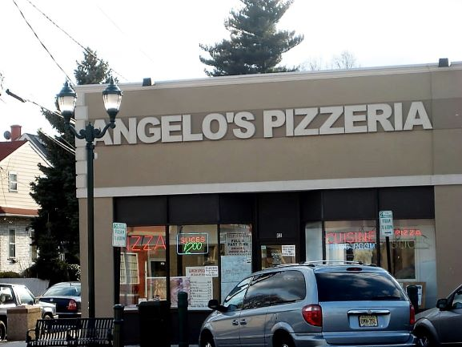
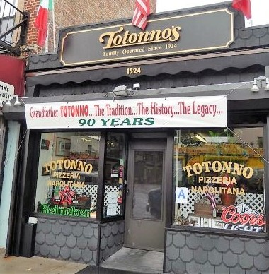
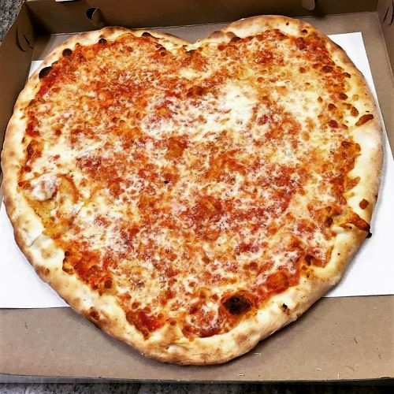
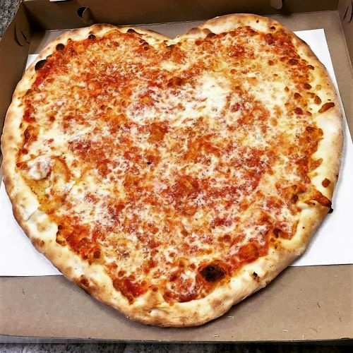

Alex's New Jersey Pizza Rankings
1. Star Tavern - Orange, New Jersey


No matter where in Ann Arbor my friend Alex and I get pizza, he always states that while the pizza is 'good', it's nothing like the pizza from The Star Tavern. Finally, one day I asked him what makes Star Tavern's pizza superior, and he replied that the New York style thin crust is so good, it might even be better than any thin crust pizza he's had in New York. The other feature of this pizza that stands out to Alex are the pepperonis -- instead of the large, flat pepperonis that most midwest pizza joints use, Star Tavern has old-school mini pepperonis that shrink into crispy, bite size pepperonis. Alex's love for the Star Tavern isn't biased by the fact that it's from his hometown -- it was voted the 2nd best pizza across the entire United States by The Daily Meal in 2015.
2. Angelo's Restaurant & Pizzeria - Bloomfield, New Jersey

The best thing about Angelo's is that it keeps its Sicilian style pizza authentic and simple. One componenet that always keeps Alex coming back for more is that they char the bottom edge of the crust, which means that the best bite truly is the last one.

3. Mr. Dino's Pizzeria & Restaurant - Montclair, New Jersey
Compared to the Star Tavern, Mr Dino's crust is a tad chewy, but not bad enough to make it unpleasant to eat. What truly sets Mr Dino's apart is its tangy tomato sauce and larger-than-your-average pepperonis. Another highlight for Alex is that no matter what pizza he orders, the proportion of sauce to cheese to toppings is always exemplary.
Harry's New York Pizza Rankings
1. Totonno's Pizzeria Napolitana - Brooklyn, New York

Harry is one of the nicest, most considerable people I have ever met. When I asked him for his take on the best pizza in New York, his response was, "There are plenty of amazing places in New York City, but the one I'd have to promote the most is Totonno's, because I know that nothing makes you happier than a good slice of pepperoni and mushroom pizza, the one from Totonno's is out of this world!" The fresh mozzarella, pepperoni, mushrooms, sauce, and Parmesan are cooked to perfection in the restaurant's coal fired oven. Another reason why Harry knows I'll love this place when we take our trip to NYC is because the crust's thickness is a perfect balance between the thin and crispy NY style Harry loves and the slightly thick and doughy crust that I love. (Taste - 5, Dough - 5, Crust - 5)
2. Sal's Pizza - Mamaroneck, New York
 

One of the highlights of Harry's brief vacations at home are going out to eat with his dad and brother. He proudly asserts that Sal's is not only the best pizza in Mamaroneck, but the best pizza joint in Westchester county. It's a genuine NY style pizza, easily foldable and somehow manages to be addictingly greasy on the top while still maintaing a firm, thin crust on the bottom. If that doesn't convince you to hit up Sal's when you're in New York, you should know that Harry doesn't love pizza in general, but he loves pizza from Sal's.